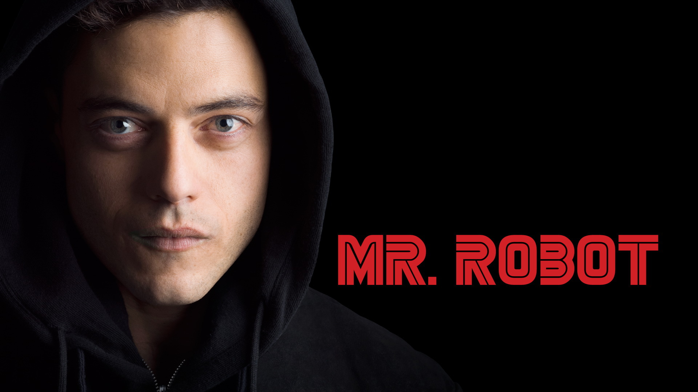

«Пан Робот» (англ. Mr. Robot) — американський психологічний серіал, створений Семом Есмаілем. Його головний герой Еліот Алдерсон, інженер кібербезпеки та гакер, страждає від соціофобії та клінічної депресії. Анархіст на ім'я Пан Робот пропонує Алдерсону долучитися до групи активістів, метою якої є знищення всіх грошових боргів шляхом здійснення атак на корпорацію E Corp.Трансляція серіалу почалась 24 червня 2015 на телеканалі USA Network.
Прем'єра пілотної серії «Пана Робота» відбулась 27 травня 2015. Вона настільки сподобалась аудиторії, що творці прийняли рішення про зйомки другого сезону ще до показу першого. Дата початку показу другого сезону — 13 липня 2016
Сюжет
Серіал розповідає про Елліот Алдерсон - молодому інженерові кібербезпеки вдень і талановитого хакера вночі. Елліот виявляється на роздоріжжі, коли таємничий лідер підпільної хакерської групи намагається завербувати його, щоб знищити корпорацію, якою він надає свої послуги. Внаслідок своїх особистих переконань Елліот намагається встояти перед можливістю скинути керівників, які, на його думку, керують світом і руйнують його
Нагороди
- 2015 SXSW Film Audience Award[12] Audience Award for Best Episodic
- 25th Gotham Independent Film Awards[13] Breakthrough Series — Long Form
- 2015 American Film Institute Awards[14] Television Programs of the Year